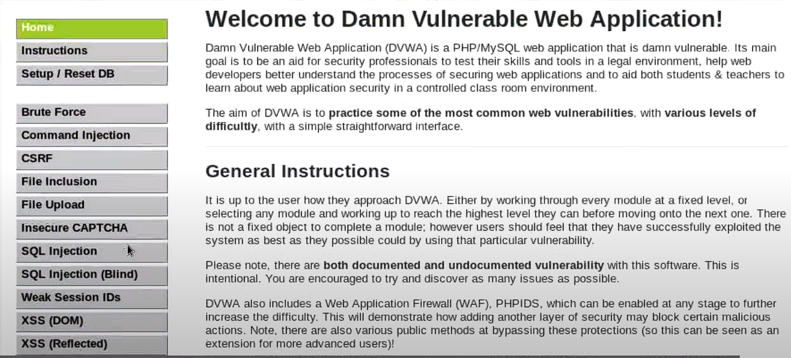

Injections
In an injection attack, a hacker can insert code into a programme, query,
or infect a machine with malware to carry out remote commands that can alter
information on a webpage or access and alter a database.
SQL injection
DVWA is used to examine a website's backend database through SQL injection.First login to DVWA, choose SQL injection on the left nav bar:

Then we type:'or '1'='1 to check usernames(if syntax error appear that mean it can be injected)
Enter: 'union select@@ version , null #' to display database version:
Enter: 'and 1 = 0 union select null,table_name from information_schema.tables #' to display all tables in information_schema:
XSS Injection
Cross Site Injection is also a malicious content sent to browsers using DVWA.From the DVWA main page choose XSS Injection on the left nav bar: Insert: text body , type <body onload=alert ( 'ucertify ')>